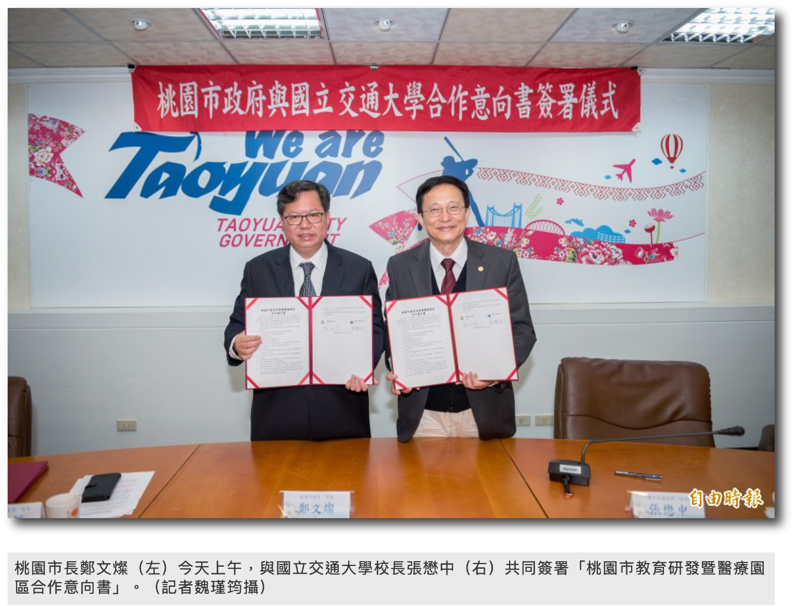

陽明交大
全球校區
建設時間尚未確認
桃園青埔全球校區占地26,823.85平方公尺，坐落於桃園市青埔地區、鄰近桃園捷運桃園體育園區站，位於為文德路、文智路及高鐵南路等3條道路環繞形成之街廊內。
規劃設置醫療創新大樓、產學研發大樓及其他附屬建築等設施，並提供國立陽明交通大學擬新設之醫療發展學院、全球商管學院進駐使用。
〔記者魏瑾筠／桃園報導〕
2019/04/16 12:55
鄭文燦說，桃園推動軟硬體結合做IOT產業，現在要進一步提升為AIOT，結合人工智慧，讓台灣產業找到下一步的立基，而張懋中曾提到，台灣有兩項技能帶不走，一是電子、二是醫療，若能結合就是強強相加，鄭文燦笑稱陽明大學不是比武招親，雖然有兩校同時爭取與陽明合作，不過最終陽明選擇和交大合作，因此未來交大將會成為有醫學院的大學，在國際排名也會大幅提升。
鄭文燦表示，青埔離機場近，有高鐵、捷運也有交流道，位處交通樞紐，適合成為研發中心的聚落，而桃園推動「亞洲．矽谷」計畫，正好將A19站旁的國小預定地，變更為文教用地，此處用途廣泛，可以設置大學、研發中心，也能附設醫院，將來透過與交大的合作將醫學、研發及教育三者結合，發展智慧生醫的服務、創新以及人才的培育。

內容取自：自由時報